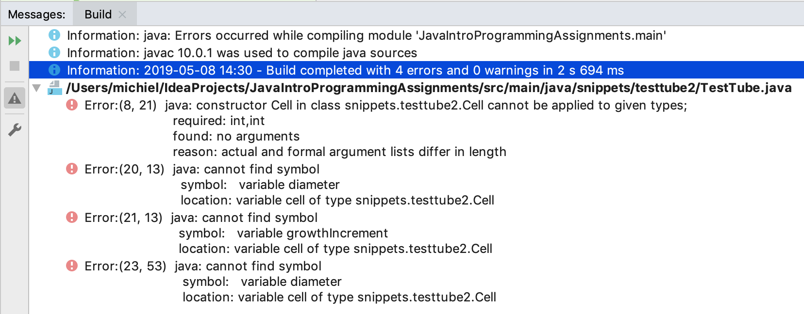

21. Encapsulation#
So far, we have not dealt with the concept of data hiding which actually is a pivotal aspect of object-oriented programming. This concept will be illustrated here, starting with the Cell class from Part one (see Objects and classes). I modified it a bit for demonstration purposes. All access modifiers were removed and a check was introduced, so that the program crashes when a Cell grows too big.
package snippets.testtube2;
public class Cell {
//diameter in micrometers
int diameter = 5;
int growthIncrement = 1;
/**
* Lets this cell grow in a single increment
*/
void grow() {
//grow by 1 micrometer
this.diameter += growthIncrement;
//we can grow many cycles safely before resources run out
if (this.diameter > 1000) throw new Error("TestTube will explode in 5 seconds");
}
}
So, the logic of this cell is based on the assumption that it starts growing at size 5 with an increment of 1 at each cycle. Nothing funny going on.
Now here is a simple version of class TestTube.
package snippets.testtube2;
class TestTube {
Cell cell;
public static void main(String[] args) {
TestTube tube = new TestTube();
tube.cell = new Cell();
//run for 5 generations
for (int i = 0; i < 5; i++) {
tube.growCells();
}
}
/**
* Grows the cells, in one single iteration.
*/
void growCells() {
//set diameter in nanometers
cell.diameter = 6000;
cell.growthIncrement = 750;
cell.grow();
System.out.println("cell diameter = " + cell.diameter);
}
}
which outputs
Exception in thread "main" java.lang.Error: TestTube will explode in 5 seconds at snippets.testtube2.Cell.grow(Cell.java:14) at snippets.testtube2.TestTube.growCells(TestTube.java:22) at snippets.testtube2.TestTube.main(TestTube.java:11)
The TestTube developer was working with nanometer units while the Cell developer was working with micrometer units. The result is a crashing application (or Mars orbiter).
Besides this big problem, when another class tries to run the growCells() method on a TestTube instance, it will get a NullPointerException. Can you figure out why?
Warning
We need a way to protect the inner state of objects
Java has a heap of techniques for preventing illegal access or modification to your instance variables (and methods). These techniques start with the use of access modifiers.
Let’s improve and secure this Cell and TestTube and keep access open only to that which needs to be publicly accessible.
Here is a new and improved Cell class:
package snippets.testtube2;
public class Cell {
private int diameterInMicrometers = 5;
private final int growthIncrementInMicrometers;
/**
* Construct with diameter and growth increment, in micrometers.
*
* @param diameterInMicrometers diameter between 1 and 40 micrometers
* @param growthIncrementInMicrometers growth increment between 1 and 5 micrometers
* @throws IllegalArgumentException ex if one of the arguments is out of range
*/
public Cell(int diameterInMicrometers, int growthIncrementInMicrometers) {
if (diameterInMicrometers < 1
|| diameterInMicrometers > 41
|| growthIncrementInMicrometers < 1
|| growthIncrementInMicrometers > 6
) {
throw new IllegalArgumentException("Cell size must start between 0 and 40 " +
"and growth increment between 0 and 5");
}
this.diameterInMicrometers = diameterInMicrometers;
//growth increment can never be changed after construction
this.growthIncrementInMicrometers = growthIncrementInMicrometers;
}
/**
* Serves the read-only property diameter.
* @return
*/
public int getDiameterInMicrometers() {
return diameterInMicrometers;
}
/**
* Grows this cell in a single increment, increasing its size with one time
* the growth increment.
*
*/
public void grow() {
this.diameterInMicrometers += growthIncrementInMicrometers;
if (this.diameterInMicrometers > 1000) throw new Error("TestTube will explode in 5 seconds");
}
}
Quite a lot has changed:
All instance variables have been marked
privatewhich means only code inside class Cell can access them.Variables have been renamed to be more reflective of what they represent.
A Constructor was added to provide a single point of initialization to both variables, at construction time.
The constructor performs a check on its parameters so that illegal arguments are caught early.
Javadoc was added to explain the public API.
A single getter was introduced for property diameter, making it a read-only property.
No getter was created for property
growthIncrementInMicrometersbecause it was decided by the developer (me) that it should only be set once during the life cycle of a Cell object. For that reason, instance variablegrowthIncrementInMicrometerswas marked final.
One setback of this whole procedure: class TestTube will not compile anymore because (a) it attempts to access the private members of class Cell and (b) because there is no no-arg constructor anymore:

Since Javadoc was added to class Cell, we can get additional information in IntelliJ by pressing ctrl + Q (Linux), ctrl + J (Mac), or F1when the cursor is on the Constructor:

Let’s solve the compilation problems, make TestTube safe, add multi-cell support, and move the main() function to the Simulator class.
package snippets.testtube2;
import java.util.ArrayList;
import java.util.List;
public class TestTube {
private final int numberOfLifeCyclesToRun;
private final int initialCellCount;
private List<Cell> cells = new ArrayList<>();
private int defaultCellDiameter = 20;
private int defaultSizeIncrement = 2;
/**
* Constructs with the two essential parameters
* @param numberOfLifeCyclesToRun a number between 1 and 100
* @param initialCellCount a number between 1 and 1000
* @return testtube a TestTube instance
*/
public TestTube (int numberOfLifeCyclesToRun, int initialCellCount) {
if (numberOfLifeCyclesToRun < 1
|| numberOfLifeCyclesToRun > 100
|| initialCellCount < 1
|| initialCellCount > 1000) {
throw new IllegalArgumentException("Number of life cycles should be between 1 and 100 and initial cell " +
"count between 1 and 1000");
}
this.numberOfLifeCyclesToRun = numberOfLifeCyclesToRun;
this.initialCellCount = initialCellCount;
}
/**
* sets the initial diameter of instantiated cells.
* @param defaultCellDiameter
*/
public void setDefaultCellDiameter(int defaultCellDiameter) {
this.defaultCellDiameter = defaultCellDiameter;
}
/**
* Sets the size increment for cell growth
* @param defaultSizeIncrement
*/
public void setDefaultSizeIncrement(int defaultSizeIncrement) {
this.defaultSizeIncrement = defaultSizeIncrement;
}
/**
* starts the growth process
*/
public void start() {
initializeCells();
runLifeCycles();
}
private void runLifeCycles() {
for (int i = 0; i < this.numberOfLifeCyclesToRun; i++) {
growCells();
}
}
private void initializeCells() {
for (int i = 0; i < this.initialCellCount; i++) {
cells.add(new Cell(this.defaultCellDiameter, this.defaultSizeIncrement));
}
}
private void growCells() {
for (Cell cell : this.cells) {
cell.grow();
}
// This is also possible:
// this.cells.forEach(c -> c.grow());
// or
// this.cells.forEach(Cell::grow);
// see chapter on Functional Programming
}
}
Yes, the class file became substantially larger - one of the setbacks of safe design.
There are several noteworthy changes here:
All instance variables are
private. Note a pattern here?Two public setters were provided (making
defaultCellDiameteranddefaultSizeIncrementwrite-only), a public constructor and one public API method that will start the testtube:start()All functionality is divided into very small methods with a very clear (and testable) responsibility. This is the Single Responsibility Principle at work.
SRP
The Single Responsibility Principle (SRP) states that all code elements (methods and classes) should only have a single purpose (or, more formal, a single reason to change).
Finally, here is the controller class CellGrowthSimulator. Its sole purpose is now to start the simulation process.
package snippets.testtube2;
/**
* "Controller" class
*/
public class CellGrowthSimulator {
public static void main(String[] args) {
startSimulation();
}
private static void startSimulation() {
TestTube testTube = new TestTube(10, 5);
testTube.setDefaultCellDiameter(10);
testTube.start();
}
}
21.1. Summary#
This post has introduced a fundamental concept of Object-Oriented Programming and design: encapsulation; hiding the inner workings of a class, mostly through the use of the private keyword and usage of getters and setters. It has also shown a first view of abstraction in class TestTube: this class has a single simple public API method (start()) and has hidden all the complexities of its simulation algorithm in private methods.
You have seen two access modifiers; there are two more that are dealt with in the next chapter.
Also, there is another chapter (Encapsulation revisited) covering some more advanced aspects of encapsulation.